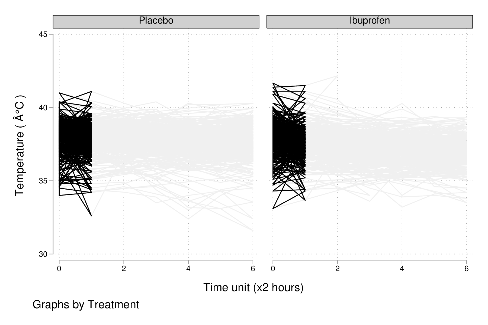
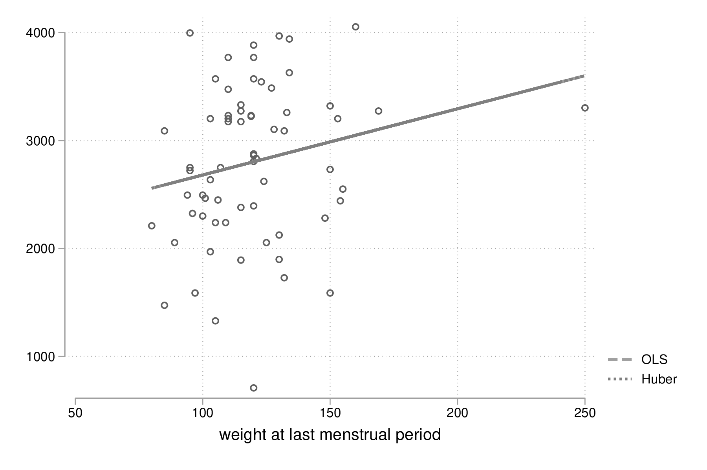

Stata : modélisation statistique (1)
Table des matières
Dans ce chapitre, on s’intéressera à la construction de modèles de régression explicatifs ou prédictifs. La première partie se concentre sur le modèle linéaire et ses applications. La seconde partie porte sur le modèle linéaire généralisé. Il existe un très bon ouvrage traitant du modèle linéaire généralisé, à présent dans sa quatrième édition et publié chez Stata Press : Generalized Linear Models and Extensions de Hardin & Hilbe. Concernant la modélisation statistique en général, les ouvrages de Vittinghoff et coll. [8] et Dupont [3] couvrent l’essentiel des notions présentées. Pour aller plus loin, le livre de Harrell [4] demeure une référence en ce qui concerne les techniques biostatistiques modernes appliquées dans un contexte médical. Bien que reposant sur le logiciel R, la plupart des techniques discutées dans cet ouvrage sont disponibles sous Stata.
La mise en oeuvre d’un modèle de régression a déjà été discutée brièvement dans le tutoriel d’introduction à Stata. Dans ce chapitre, on va s’intéresser à l’estimation des paramètres d’un modèle de régression linéaire, à la sélection du « meilleur » modèle dans un cadre explicatif, au diagnostic du modèle, et à la prédiction ponctuelle ou par intervalles. On prendra pour base des données observationnelles issues d’enquêtes ou d’études cliniques transversales. Les séries chronologiques et les données longitudinales seront traitées dans des chapitres séparés.
Le modèle de régression linéaire simple
Dans un premier temps, procédons à quelques rappels concernant la régression linéaire simple, la corrélation linéaire et le test de Student. Les notions connexes telles que les associations non linéaires ou les approches non paramétriques seront traitées ultérieurement.
Un exemple de régression linéaire simple
Les données d’illustration peuvent être chargées directement depuis internet à l’aide de la commande webuse. Il s’agit d’une enquête épidémiologique rétrospective dans laquelle on s’intéresse aux facteurs de risque d’un bébé ayant un poids inférieur à la norme, selon les normes américaines des années 90. Ces données sont extensivement analysées dans l’ouvrage de Hosmer & Lemeshow [5]. Au total, le tableau de données contient 11 variables, la variable réponse étant le poids des bébés (bwt) :
webuse lbw describe, simple
set more off webuse lbw (Hosmer & Lemeshow data) describe, simple id low age lwt race smoke ptl ht ui ftv bwt
La relation entre le poids des bébés (en grammes) et le poids des mères (initialement en livres, converti en kilogrammes) est représentée dans la figure suivante sous la forme d’un simple diagramme de dispersion. Pour faciliter la lecture, le poids des mères est converti en kilogrammes, sans modifier le mode de représentation de la variable :
replace lwt = lwt / 2.204623, nopromote
replace lwt = lwt / 2.204623, nopromote (189 real changes made) (189 values truncated because of storage type)
Ensuite, on utilise la commande scatter pour construire le diagramme de dispersion :
set scheme plotplain graph twoway scatter bwt lwt graph export "fig-03-scatter-bwt-lwt.pdf", fontface(DroidSans) replace
Figure 1 : Relation entre le poids des bébés et le poids des mères
Il est tout à fait possible et largement recommendé de superposer une courbe loess [2] sur le diagramme de dispersion précédent afin d’évaluer visuellement les écarts à la linéarité concernant la relation entre ces deux variables. Une courbe loess, ou lowess (locally weighted scatterplot smoothing), fait partie de la famille des régressions polynomiales « locales », c’est-à-dire des modèles non-paramétriques de régression tenant compte du voisinage des observations, un peu à l’image des techniques telles que les \(k\) plus proches voisins dans une tâche de classification (car l’estimation est pondérée) ou les moyennes mobiles en séries chronologiques (car on définit une fenêtre de lissage que l’on déplace sur l’axe des \(x\)). Le poids de chaque observation est déterminé par sa distance par rapport au point sur lequel se centre la régression, et généralement la fonction de pondération utilisée est de type tri-cubique comme proposée par [2], \((1 - (\text{dist}/\text{maxdist})^3)^3)\), ce qui revient à donner un poids maximal à l’observation centrale, les observations les distantes plus de cette dernière contribuant le moins à la régression polynomiale. Stata autorise n’importe quelle combinaison des options mean (utiliser la moyenne des observations, comme dans une moyenne mobile, au lieu des valeurs prédites par la régression) et noweight (l’utilisation d’une fonction de pondération tri-cubique ou non). À noter, il s’agit d’une approche quelque peu intensive sur le plan des calculs : pour \(n\) observations, \(n\) régressions sont réalisées.
La commande lowess peut être combinée à scatter :
graph twoway scatter bwt lwt || lowess bwt lwt, legend(off) graph export "fig-03-lowess-bwt-lwt.pdf", fontface(DroidSans) replace
Figure 2 : Relation entre le poids des bébés et le poids des mères (courbe loess)
La corrélation entre ces deux variables s’obtient grâce à correlate. Notons que cette commande fonctionne avec deux variables ou une liste de variables de sorte qu’elle pourra également être utilisée pour construire une matrice de corrélation :
summarize bwt lwt correlate bwt lwt
summarize bwt lwt
Variable | Obs Mean Std. Dev. Min Max
-------------+---------------------------------------------------------
bwt | 189 2944.286 729.016 709 4990
lwt | 189 58.34392 13.88108 36 113
correlate bwt lwt
(obs=189)
| bwt lwt
-------------+------------------
bwt | 1.0000
lwt | 0.1863 1.0000
Voici une formulation simplifiée du modèle de régression linéaire. Soit \(y_i\) la réponse observée sur l’individu \(i\), et \(x_i\) sa valeur observée pour le prédicteur \(x\). Le modèle de régression linéaire s’écrit : \[y_i = \beta_0+\beta_1x_i+\varepsilon_i,\] où \(\beta_0\) représente l’ordonnée à l’origine (intercept) et \(\beta_1\) la pente (\emph{slope}) de la droite de régression, et \(\varepsilon_i\sim\mathcal{N}(0,\sigma^2)\) est un terme d’erreur (résidus, supposés indépendants). En minimisant les différences quadratiques entre les valeurs observées et les valeurs prédites (principe des MCO), on peut estimer les coefficients de régression, \(\widehat\beta_0\) et \(\widehat\beta_1\) : \[\begin{array}{l} \widehat\beta_0 = \bar y - \widehat\beta_1\bar x\\ \widehat\beta_1 = \sum(y_i-\bar y)(x_i-\bar x)/\sum(x_i-\bar x)^2\\ \end{array}\]
Sous \(H_0\), le rapport entre l’estimé de la pente (\(\widehat\beta_1\), de variance \(\frac{\text{SSR}/(n-2)}{(n-1)s_x^2}\)) et son erreur standard suit une loi de Student à \((n-2)\) degrés de liberté.
Les paramètres d’un tel modèle de régression, \(\widehat\beta_0\) et \(\widehat\beta_1\), peuvent être estimés grâce à la commande regress, en indiquant la variable à prédire et la ou les variables explicatives. Pour un modèle de régression linéaire simple, on se retrouve donc avec l’expression la plus simple qui soit :
regress bwt lwt
regress bwt lwt
Source | SS df MS Number of obs = 189
-------------+---------------------------------- F(1, 187) = 6.72
Model | 3467517.36 1 3467517.36 Prob > F = 0.0103
Residual | 96447781.2 187 515763.536 R-squared = 0.0347
-------------+---------------------------------- Adj R-squared = 0.0295
Total | 99915298.6 188 531464.354 Root MSE = 718.17
------------------------------------------------------------------------------
bwt | Coef. Std. Err. t P>|t| [95% Conf. Interval]
-------------+----------------------------------------------------------------
lwt | 9.783793 3.773317 2.59 0.010 2.340054 17.22753
_cons | 2373.461 226.263 10.49 0.000 1927.105 2819.817
------------------------------------------------------------------------------
Les résultats fournis par regress se composent de deux tableaux : le tableau d’analyse de variance du modèle de régression, qui peut être supprimé via l’option noheader, et le tableau des coefficients de régression. La ligne _cons désigne le terme d’ordonnée à l’origine, \(\widehat\beta_0\). Le résultat du test de Student associé à lwt (\(\widehat\beta_1\)) peut se retrouver manuellement une fois que l’on a extrait les valeurs d’intérêt :
local tstat = _b[lwt] / _se[lwt] display "t = " %4.2f `tstat' " p = " %4.3f 2*ttail(187, `tstat')
local tstat = _b[lwt] / _se[lwt] display "t = " %4.2f `tstat' " p = " %4.3f 2*ttail(187, `tstat') t = 2.59 p = 0.010
Diagnostic du modèle
La commande predict permet non seulement de calculer les valeurs ajustées du modèle mais également les résidus du modèle (\(e_i = \tilde y_i - y_i\)) ainsi que d’autres statistiques utiles pour diagnostiquer la qualité d’ajustement du modèle de régression.
predict double yhat predict double rs, rstudent summarize rs
predict double yhat
(option xb assumed; fitted values)
predict double rs, rstudent
summarize rs
Variable | Obs Mean Std. Dev. Min Max
-------------+---------------------------------------------------------
rs | 189 -.0010581 1.008052 -3.133601 2.961918
Dans le cas ci-dessus, ce sont les résidus studentisés, \(r_i = e_i / (s_{(i)}\sqrt{1-h_i})\), qui ont été calculés. D’autres options sont également disponibles mais ce type de résidus facilite à la fois l’interprétation et la détection de valeurs extrêmes (voir également l’aide en ligne, help regress postestimation). Par exemple, voici un diagramme de quantiles pour les résidus simples :
predict double r, resid qnorm r graph export "fig-03-qnorm-r.pdf", fontface(DroidSans) replace
Figure 3 : Distribution des résidus simples
Un histogramme ou une courbe de densité permet également d’examiner rapidement la forme de la distribution des résidus. Voici un exemple avec kdensity, pour lequel une courbe de densité normale a été ajoutée à l’aide de l’option normal :
kdensity rs, normal normopts(lpat(--)) graph export "fig-03-kdensity-rs.pdf", fontface(DroidSans) replace
Figure 4 : Distribution des résidus studentisés
Le graphique suivant est plus informatif car il renseigne à la fois sur la distribution des résidus et la corrélation entre les valeurs prédites par le modèle et ces derniers, qui selon l’hypothèse du modèle doit être nulle. Ici, on utilise les valeurs de post-estimation calculées plus haut, mais il serait tout à fait possible d’utiliser directement la commande de post-estimation rvfplot (ou rvpplot, mais dans le cas d’une régression avec un seul prédicteur cela ne change rien) :
graph twoway scatter rs yhat, yline(0) graph export "fig-03-scatter-rs-yhat.pdf", fontface(DroidSans) replace
Figure 5 : Relation entre valeurs ajustées et résidus
Approche bayésienne
Bien que l’analyse bayésienne soit traitée dans un chapitre à part, on peut d’ores et déjà jeter un oeil aux résultats fournis à l’aide d’une estimation bayésienne grâce au préfixe bayes :
bayes: regress bwt lwt
bayes: regress bwt lwt
Burn-in ...
Simulation ...
Model summary
------------------------------------------------------------------------------
Likelihood:
bwt ~ regress(xb_bwt,{sigma2})
Priors:
{bwt:lwt _cons} ~ normal(0,10000) (1)
{sigma2} ~ igamma(.01,.01)
------------------------------------------------------------------------------
(1) Parameters are elements of the linear form xb_bwt.
Bayesian linear regression MCMC iterations = 12,500
Random-walk Metropolis-Hastings sampling Burn-in = 2,500
MCMC sample size = 10,000
Number of obs = 189
Acceptance rate = .3298
Efficiency: min = .1098
avg = .1337
Log marginal likelihood = -1560.4853 max = .1701
------------------------------------------------------------------------------
| Equal-tailed
| Mean Std. Dev. MCSE Median [95% Cred. Interval]
-------------+----------------------------------------------------------------
bwt |
lwt | 43.58173 1.883094 .054077 43.53474 39.95648 47.16767
_cons | 284.3631 97.14963 2.93156 283.3922 93.44962 474.636
-------------+----------------------------------------------------------------
sigma2 | 752743.4 82557.84 2001.82 746546.5 610273.4 933102.3
------------------------------------------------------------------------------
Note: Default priors are used for model parameters.
Cas de la régression sur une variable catégorielle
On a vu dans le chapitre sur la gestion des données comment représenter les variables catégorielles sous Stata : dans le cas des variables binaires, un codage sous forme de 0 et de 1 est parfaitement adéquat, tandis que dans le cas des variables à plus de deux modalités, on assigne à chaque niveau un code numérique en débutant à 1. Ainsi, pour une variable à trois modalités, le premier niveau sera représenté par la valeur 1 tandis que le troisième et dernier niveau prendra la valeur 3. On associera éventuellement des étiquettes à chacun des niveaux afin de mieux identifier les différentes classes.
Considérons la variable smoke qui indique si la mère fumait pendant le premier trimestre de sa grossesse :
tabulate smoke, nolabel tabstat bwt, by(smoke) stat(mean sd n)
tabulate smoke, nolabel
smoked |
during |
pregnancy | Freq. Percent Cum.
------------+-----------------------------------
0 | 115 60.85 60.85
1 | 74 39.15 100.00
------------+-----------------------------------
Total | 189 100.00
tabstat bwt, by(smoke) stat(mean sd n)
Summary for variables: bwt
by categories of: smoke (smoked during pregnancy)
smoke | mean sd N
----------+------------------------------
nonsmoker | 3054.957 752.409 115
smoker | 2772.297 659.8075 74
----------+------------------------------
Total | 2944.286 729.016 189
-----------------------------------------
graph box bwt, over(smoke) graph export "fig-03-box-bwt-smoke.pdf", fontface(DroidSans) replace

Figure 6 : Relation entre poids des bébés et statut fumeur
Le modèle de régression suivant considère la variable smoke comme une variable numérique et le coefficient de régression pour cette variable représente la variation de poids lorsque smoke varie d’une unité (de 0 à 1) :
regress bwt smoke
regress bwt smoke
Source | SS df MS Number of obs = 189
-------------+---------------------------------- F(1, 187) = 6.98
Model | 3597444.33 1 3597444.33 Prob > F = 0.0089
Residual | 96317854.2 187 515068.739 R-squared = 0.0360
-------------+---------------------------------- Adj R-squared = 0.0308
Total | 99915298.6 188 531464.354 Root MSE = 717.68
------------------------------------------------------------------------------
bwt | Coef. Std. Err. t P>|t| [95% Conf. Interval]
-------------+----------------------------------------------------------------
smoke | -282.6592 106.9544 -2.64 0.009 -493.6515 -71.66693
_cons | 3054.957 66.92428 45.65 0.000 2922.933 3186.98
------------------------------------------------------------------------------
En indiquant à Stata que la variable smoke doit être traitée comme une variable catégorielle et de générer l’ensemble de variables indicatrices correspondant, on obtiendra strictement le même résultat du fait du codage initial en 0/1 :
regress bwt i.smoke
regress bwt i.smoke
Source | SS df MS Number of obs = 189
-------------+---------------------------------- F(1, 187) = 6.98
Model | 3597444.33 1 3597444.33 Prob > F = 0.0089
Residual | 96317854.2 187 515068.739 R-squared = 0.0360
-------------+---------------------------------- Adj R-squared = 0.0308
Total | 99915298.6 188 531464.354 Root MSE = 717.68
------------------------------------------------------------------------------
bwt | Coef. Std. Err. t P>|t| [95% Conf. Interval]
-------------+----------------------------------------------------------------
smoke |
smoker | -282.6592 106.9544 -2.64 0.009 -493.6515 -71.66693
_cons | 3054.957 66.92428 45.65 0.000 2922.933 3186.98
------------------------------------------------------------------------------
Considérons la variable race qui a trois niveaux. Il est tout à fait possible de générer l’ensemble des indicatrices associées à cette variable à l’aide de tabulate :
quietly tabulate race, gen(irace) list race irace* in 1/5
quietly tabulate race, gen(irace)
list race irace* in 1/5
+----------------------------------+
| race irace1 irace2 irace3 |
|----------------------------------|
1. | black 0 1 0 |
2. | other 0 0 1 |
3. | white 1 0 0 |
4. | white 1 0 0 |
5. | white 1 0 0 |
+----------------------------------+
Ensuite, il suffira d’inclure deux indicatrices parmi les trois dans le modèle de régression, par exemple regress bwt irace2 irace3. Mais comme on l’a vu plus haut, l’opérateur i. permet de générer automatiquement un ensemble d’indicatrices pour n’importe quelle variable catégorielle :
regress bwt i.race
regress bwt i.race
Source | SS df MS Number of obs = 189
-------------+---------------------------------- F(2, 186) = 4.95
Model | 5048361.06 2 2524180.53 Prob > F = 0.0081
Residual | 94866937.5 186 510037.298 R-squared = 0.0505
-------------+---------------------------------- Adj R-squared = 0.0403
Total | 99915298.6 188 531464.354 Root MSE = 714.17
------------------------------------------------------------------------------
bwt | Coef. Std. Err. t P>|t| [95% Conf. Interval]
-------------+----------------------------------------------------------------
race |
black | -383.3181 157.8914 -2.43 0.016 -694.8064 -71.82985
other | -298.9955 113.6899 -2.63 0.009 -523.2829 -74.70811
|
_cons | 3103.01 72.88956 42.57 0.000 2959.214 3246.807
------------------------------------------------------------------------------
Par défaut, le premier niveau de la variable catégorielle (ici, white) sert de niveau de référence, mais il est tout à fait possible de modifier ce comportement en indiquant la catégorie à utiliser pour la « baseline ». En utilisant le préfixe ib3, on indique à Stata que le troisième niveau de race servira de catégorie de référence :
regress bwt ib3.race
regress bwt ib3.race
Source | SS df MS Number of obs = 189
-------------+---------------------------------- F(2, 186) = 4.95
Model | 5048361.06 2 2524180.53 Prob > F = 0.0081
Residual | 94866937.5 186 510037.298 R-squared = 0.0505
-------------+---------------------------------- Adj R-squared = 0.0403
Total | 99915298.6 188 531464.354 Root MSE = 714.17
------------------------------------------------------------------------------
bwt | Coef. Std. Err. t P>|t| [95% Conf. Interval]
-------------+----------------------------------------------------------------
race |
white | 298.9955 113.6899 2.63 0.009 74.70811 523.2829
black | -84.32262 165.0131 -0.51 0.610 -409.8604 241.2152
|
_cons | 2804.015 87.24962 32.14 0.000 2631.889 2976.141
------------------------------------------------------------------------------
On retrouvera bien les différences de moyennes par simple estimation de contrastes grâce à contrast ou margins :
contrast r.race, nowald effects
contrast r.race, nowald effects
Contrasts of marginal linear predictions
Margins : asbalanced
------------------------------------------------------------------------------
| Contrast Std. Err. t P>|t| [95% Conf. Interval]
-------------+----------------------------------------------------------------
race |
(white |
vs |
other) | 298.9955 113.6899 2.63 0.009 74.70811 523.2829
(black |
vs |
other) | -84.32262 165.0131 -0.51 0.610 -409.8604 241.2152
------------------------------------------------------------------------------
Lien avec le test de Student
La différence de moyennes utilisée pour former la statistique de test de Student et qui est rappelée dans la sortie de ttest ci-dessous correspond strictement à la pente de la droite de régression estimée dans la section précédente :
ttest bwt, by(smoke)
ttest bwt, by(smoke)
Two-sample t test with equal variances
------------------------------------------------------------------------------
Group | Obs Mean Std. Err. Std. Dev. [95% Conf. Interval]
---------+--------------------------------------------------------------------
nonsmoke | 115 3054.957 70.1625 752.409 2915.965 3193.948
smoker | 74 2772.297 76.70106 659.8075 2619.432 2925.162
---------+--------------------------------------------------------------------
combined | 189 2944.286 53.02811 729.016 2839.679 3048.892
---------+--------------------------------------------------------------------
diff | 282.6592 106.9544 71.66693 493.6515
------------------------------------------------------------------------------
diff = mean(nonsmoke) - mean(smoker) t = 2.6428
Ho: diff = 0 degrees of freedom = 187
Ha: diff < 0 Ha: diff != 0 Ha: diff > 0
Pr(T < t) = 0.9955 Pr(|T| > |t|) = 0.0089 Pr(T > t) = 0.0045
On peut d’ailleurs visualiser très facilement ce différentiel de moyennes à l’aide d’un simple diagramme de dispersion en considérant la variable binaire sur l’axe des abscisses. Plutôt que d’utiliser scatter et de redéfinir l’axe des x, il est plus simple d’utiliser un diagramme un point tel que proposé par la commande externe stripplot (à installer au préalable, ssc install stripplot) :
stripplot bwt, over(smoke) vertical jitter(1 0) addplot(lfit bwt smoke) graph export "fig-03-stripplot-bwt-smoke.pdf", fontface(DroidSans) replace
Figure 7 : Relation entre poids des bébés et statut fumeur
Une manière de vérifier graphiquement l’hypothèse d’égalité des variances, nécessaire dans le test ci-dessus afin de recouvrer les résultats du test du coefficient de régression, consisterait à comparer les fonctions de répartition empirique des deux groupes comme suggéré sur le forum Stata.
Dans le cas d’une variable catégorielle à plus de deux niveaux, telle que race, il est toujours possible de former l’ensemble des tests de Student pour la comparaison des différentes paires de moyennes à l’aide de pwmean comme illsutré ci-dessous :
pwmean bwt, over(race) effects
pwmean bwt, over(race) effects
Pairwise comparisons of means with equal variances
over : race
------------------------------------------------------------------------------
| Unadjusted Unadjusted
bwt | Contrast Std. Err. t P>|t| [95% Conf. Interval]
-------------+----------------------------------------------------------------
race |
black |
vs |
white | -383.3181 157.8914 -2.43 0.016 -694.8064 -71.82985
other |
vs |
white | -298.9955 113.6899 -2.63 0.009 -523.2829 -74.70811
other |
vs |
black | 84.32262 165.0131 0.51 0.610 -241.2152 409.8604
------------------------------------------------------------------------------
L’option mcompare() permet d’adapter le type de statistique de test (Tukey, Dunnett), mais dans le cas du modèle de régression précédent il n’y a pas lieu d’appliquer de correction pour les tests multiples ou de modifier la statistique de test. La commande pwmean fournit les mêmes résultats et accepte les mêmes options que pwcompare. La seule différence est qye cette dernière s’utilise en tant que commande de post-estimation et sa syntaxe est plus souple dans le cas des modèles à plusieurs prédicteurs, incluant d’éventuels termes d’interaction.
Voici une autre illustration, cette fois-ci avec les données d’un essai clinique randomisé visant à évaluer l’effet de l’administration d’ibuprofène par voie intraveineuse sur la mortalité de patients en état septique sévère [1]. Les données, disponibles dans le fichier sepsis.dta, sont largement exploitées dans l’ouvrage de William Dupont [3]. Au total, le tableau de données est composé 22 variables dont 16 variables représentant une mesure de la température entre \(T_0\) et \(T_0 + 15 \times 2\) h, deux groupes de patients (« Placebo », n = 231 et « Ibuprofène », n = 224) et une mesure de morbidité (score APACHE).
use "data/sepsis.dta", replace describe, simple table treat, content(mean temp0 mean temp1 mean temp6) format(%5.1f)
use "data/sepsis.dta", replace describe, simple id apache followup temp2 temp5 temp8 temp11 temp14 treat o2del temp0 temp3 temp6 temp9 temp12 temp15 race fate temp1 temp4 temp7 temp10 temp13 table treat, content(mean temp0 mean temp1 mean temp6) format(%5.1f) ------------------------------------------------- Treatment | mean(temp0) mean(temp1) mean(temp6) ----------+-------------------------------------- Placebo | 100.5 100.2 99.7 Ibuprofen | 100.4 99.5 98.4 -------------------------------------------------
Voici comment générer un aperçu des données individuelles sous forme longitudinale, limité à la période 0-6 heures :
keep id treat temp0-temp6 reshape long temp, i(id) j(hour) replace temp = (temp-32) / 1.8 graph twoway (scatter temp hour, ms(none) lcol(gs15) connect(l)) (scatter temp hour if hour < 2, ms(none) connect(l)), by(treat, legend(off)) xtitle(Time unit (x2 hours)) ytitle (Temperature (°C)) graph export "fig-03-scatter-temp-hour.pdf", fontface(DroidSans) replace

Figure 8 : Évolution de la température après la prise en charge dans les deux groupes de patients
Bien que la technique appropriée pour modéliser l’évolution de la température entre \(T_0\) et \(T_1\) entre les deux groupes soit une analyse de covariance, voici en attendant les questions auxquelles il est possible de répondre à l’aide de simples tests de Student. Premièrement, les deux groupes sont-ils comparables à \(T_0\) (\(H_0\) : temp0(ibuprofène) = temp0(placebo)) ? Voici l’instruction Stata correspondante :
ttest temp if hour == 0, by(treat)
ttest temp if hour == 0, by(treat)
Two-sample t test with equal variances
------------------------------------------------------------------------------
Group | Obs Mean Std. Err. Std. Dev. [95% Conf. Interval]
---------+--------------------------------------------------------------------
Placebo | 231 38.05012 .0699302 1.062847 37.91233 38.18791
Ibuprofe | 224 37.97862 .0793881 1.188173 37.82217 38.13507
---------+--------------------------------------------------------------------
combined | 455 38.01492 .0527696 1.125614 37.91122 38.11862
---------+--------------------------------------------------------------------
diff | .0714991 .1056147 -.1360564 .2790546
------------------------------------------------------------------------------
diff = mean(Placebo) - mean(Ibuprofe) t = 0.6770
Ho: diff = 0 degrees of freedom = 453
Ha: diff < 0 Ha: diff != 0 Ha: diff > 0
Pr(T < t) = 0.7506 Pr(|T| > |t|) = 0.4988 Pr(T > t) = 0.2494
Deuxièmement, les deux groupes sont-ils comparables à \(T_1\) en terme d’évolution \((T_0-T_1)\) (\(H_0\) : temp0−temp1(ibuprofène) = temp0−temp1(placebo)) ?
quietly: reshape wide gen difftemp = temp0 - temp1 ttest difftemp, by(treat)
quietly: reshape wide
gen difftemp = temp0 - temp1
(35 missing values generated)
ttest difftemp, by(treat)
Two-sample t test with equal variances
------------------------------------------------------------------------------
Group | Obs Mean Std. Err. Std. Dev. [95% Conf. Interval]
---------+--------------------------------------------------------------------
Placebo | 212 .1733228 .0408455 .594719 .0928054 .2538403
Ibuprofe | 208 .4913999 .0478614 .6902662 .3970417 .5857581
---------+--------------------------------------------------------------------
combined | 420 .3308467 .0323248 .6624603 .2673078 .3943856
---------+--------------------------------------------------------------------
diff | -.318077 .0628323 -.4415837 -.1945704
------------------------------------------------------------------------------
diff = mean(Placebo) - mean(Ibuprofe) t = -5.0623
Ho: diff = 0 degrees of freedom = 418
Ha: diff < 0 Ha: diff != 0 Ha: diff > 0
Pr(T < t) = 0.0000 Pr(|T| > |t|) = 0.0000 Pr(T > t) = 1.0000
Enfin, troisièment, on pourrait se demander s’il y a une évolution significative entre \(T_0\) et \(T_1\) pour le groupe traité : il s’agit cette fois d’un test t pour données appariées. Voici le code correspondant :
ttest temp0 == temp1 if treat == 1
ttest temp0 == temp1 if treat == 1
Paired t test
------------------------------------------------------------------------------
Variable | Obs Mean Std. Err. Std. Dev. [95% Conf. Interval]
---------+--------------------------------------------------------------------
temp0 | 208 38.0031 .0829791 1.196742 37.83951 38.16669
temp1 | 208 37.5117 .0714197 1.030029 37.3709 37.6525
---------+--------------------------------------------------------------------
diff | 208 .4913999 .0478614 .6902662 .3970417 .5857581
------------------------------------------------------------------------------
mean(diff) = mean(temp0 - temp1) t = 10.2672
Ho: mean(diff) = 0 degrees of freedom = 207
Ha: mean(diff) < 0 Ha: mean(diff) != 0 Ha: mean(diff) > 0
Pr(T < t) = 1.0000 Pr(|T| > |t|) = 0.0000 Pr(T > t) = 0.0000
Par une approche de régression simple, on obtiendrait essentiellement des réponses similaires. Voici déjà une commande permettant d’estimer les paramètres du modèle dans les deux groupes :
quietly: reshape long bysort treat: regress temp hour, noheader
quietly: reshape long
bysort treat: regress temp hour, noheader
-------------------------------------------------------------------------------
-> treat = Placebo
------------------------------------------------------------------------------
temp | Coef. Std. Err. t P>|t| [95% Conf. Interval]
-------------+----------------------------------------------------------------
hour | -.072687 .0138938 -5.23 0.000 -.0999401 -.0454339
_cons | 38.00192 .050157 757.66 0.000 37.90353 38.1003
------------------------------------------------------------------------------
-------------------------------------------------------------------------------
-> treat = Ibuprofen
------------------------------------------------------------------------------
temp | Coef. Std. Err. t P>|t| [95% Conf. Interval]
-------------+----------------------------------------------------------------
hour | -.1675952 .0132796 -12.62 0.000 -.1936444 -.1415459
_cons | 37.72096 .047841 788.46 0.000 37.62712 37.81481
------------------------------------------------------------------------------
À partir de là, on souhaite comparer les coefficients de régression entre les deux groupes. Pour cela, il y a deux approches possibles. D’une part il est possible, et c’est sans doute le plus simple, de reconnaître qu’il s’agit essentiellement d’un test de l’interaction entre les deux variables hour et treat. Dans ce cas, il suffit de générer le terme d’interaction et de tester ses composantes directement :
quietly: tabulate treat, gen(treat) generate treat1hour = treat1*hour generate treat2hour = treat2*hour quietly: regress temp treat1 treat2 treat1hour treat2hour test treat1hour treat2hour
quietly: tabulate treat, gen(treat)
generate treat1hour = treat1*hour
generate treat2hour = treat2*hour
quietly: regress temp treat1 treat2 treat1hour treat2hour
test treat1hour treat2hour
( 1) treat1hour = 0
( 2) treat2hour = 0
F( 2, 2966) = 89.02
Prob > F = 0.0000
Le test ci-dessus est un test simultané (2 degrés de liberté) pour la nullité des termes d’interaction, tandis que le test ci-dessous permet d’évaluer l’égalité de ces deux termes :
test treat1hour = treat2hour
test treat1hour = treat2hour
( 1) treat1hour - treat2hour = 0
F( 1, 2966) = 24.33
Prob > F = 0.0000
Traitement de la non linéarité
Il existe plusieurs approches pour traiter le cas d’une relation non linéaire entre la variable réponse et un prédicteur continu.
Revenons aux données sur les poids de naissance. Voici une illustration avec l’âge de la mère :
clear all webuse lbw scatter bwt age || qfitci bwt age, legend(off) graph export "fig-03-scatter-bwt-age.pdf", fontface(DroidSans) replace
Figure 9 : Relation entre poids des bébés et âge de la mère
L’estimation des paramètres du modèle de régression ne pose pas de difficulté lorsque l’on suppose une simple relation linéaire :
gen agesq = age^2 regress bwt age agesq
gen agesq = age^2
regress bwt age agesq
Source | SS df MS Number of obs = 189
-------------+---------------------------------- F(2, 186) = 3.89
Model | 4007561.9 2 2003780.95 Prob > F = 0.0222
Residual | 95907736.7 186 515632.993 R-squared = 0.0401
-------------+---------------------------------- Adj R-squared = 0.0298
Total | 99915298.6 188 531464.354 Root MSE = 718.08
------------------------------------------------------------------------------
bwt | Coef. Std. Err. t P>|t| [95% Conf. Interval]
-------------+----------------------------------------------------------------
age | -151.2227 66.3142 -2.28 0.024 -282.0474 -20.39809
agesq | 3.253674 1.304625 2.49 0.014 .6799088 5.827439
_cons | 4610.534 817.5263 5.64 0.000 2997.718 6223.35
------------------------------------------------------------------------------
L’approche qui suit repose sur des polynômes fractionnaires, qui ont été largement développés et popularisés par Royston et coll. [7]. L’idée générale est de considérer des polynômes dont les exposants sont pris dans un ensemble prédéfini de valeurs \(P = {-2, -1, -0.5, 0, 0.5, 1, 2, 3}\), où par convention \(x^{(0)} = \ln(x)\). Un polynôme fractionnaire de degré \(m\) se construit comme \(\text{FPm} = \beta_0 + \sum_{j=1}^m \beta_jx^{(p_j)}\), où \(p_j \in P\). On notera que pour un polynôme de degré \(m\), une même puissance peut être répétée \(m\) fois.
Stata 13 disposait de la commande fracpoly mais désormais il est recommendé d’utiliser les commandes fp (cas univarié) et mfp (cas multivarié) qui permettent de construire automatiquement les termes d’un ou plusieurs polynômes fractionnaires pour une variable numérique donnée. Voici un exemple d’application sur la variable age :
fp <age> : regress bwt <age>
fp <age> : regress bwt <age>
(fitting 44 models)
(....10%....20%....30%....40%....50%....60%....70%....80%....90%....100%)
Fractional polynomial comparisons:
-------------------------------------------------------------------------------
age | df Deviance Res. s.d. Dev. dif. P(*) Powers
-------------+-----------------------------------------------------------------
omitted | 0 3027.017 729.016 9.161 0.062
linear | 1 3025.497 728.029 7.641 0.059 1
m = 1 | 2 3023.143 723.510 5.288 0.076 3
m = 2 | 4 3017.856 715.375 0.000 -- 3 3
-------------------------------------------------------------------------------
(*) P = sig. level of model with m = 2 based on F with 184
denominator dof.
Source | SS df MS Number of obs = 189
-------------+---------------------------------- F(2, 186) = 4.62
Model | 4727609.47 2 2363804.73 Prob > F = 0.0110
Residual | 95187689.1 186 511761.769 R-squared = 0.0473
-------------+---------------------------------- Adj R-squared = 0.0371
Total | 99915298.6 188 531464.354 Root MSE = 715.38
------------------------------------------------------------------------------
bwt | Coef. Std. Err. t P>|t| [95% Conf. Interval]
-------------+----------------------------------------------------------------
age_1 | -.2336151 .1059006 -2.21 0.029 -.4425358 -.0246944
age_2 | .0660855 .0287679 2.30 0.023 .0093323 .1228388
_cons | 3198.04 191.0215 16.74 0.000 2821.192 3574.887
------------------------------------------------------------------------------
fp plot, residuals(none) graph export "fig-03-fpplot-bwt-age.pdf", fontface(DroidSans) replace
Figure 10 : Utilisation de polynômes fractionnaires pour la relation entre poids des bébés et âge de la mère
Approche robuste
FIXME Find a better illustration + provide more background
Plutôt que de minimiser les écarts quadratiques entre les valeurs prédites et les valeurs observées, il est tout à fait possible d’utiliser un autre type d’estimateur.
Considérons la relation entre le poids des bébés et le poids des mères dont l’ethnicité est black. La commande suivante permet d’afficher un simple diagramme de dispersion ainsi que la droite de régression associée :
twoway (scatter bwt lwt) (lfit bwt lwt) if race == 3 graph export "fig-03-scatter-bwt-lwt-race3.pdf", fontface(DroidSans) replace
Figure 11 : Relation entre poids des bébés et taille de la mère
Les valeurs ajustées du modèle de régression peuvent être obtenues à l’aide de predict :
regress bwt lwt if race == 3 predict yhols
regress bwt lwt if race == 3
Source | SS df MS Number of obs = 67
-------------+---------------------------------- F(1, 65) = 3.11
Model | 1566727.54 1 1566727.54 Prob > F = 0.0826
Residual | 32771445.4 65 504176.084 R-squared = 0.0456
-------------+---------------------------------- Adj R-squared = 0.0309
Total | 34338173 66 520275.348 Root MSE = 710.05
------------------------------------------------------------------------------
bwt | Coef. Std. Err. t P>|t| [95% Conf. Interval]
-------------+----------------------------------------------------------------
lwt | 6.133087 3.479153 1.76 0.083 -.815261 13.08143
_cons | 2067.861 426.5168 4.85 0.000 1216.048 2919.674
------------------------------------------------------------------------------
predict yhols
(option xb assumed; fitted values)
La commande robreg disponible dans le package du même nom (ssc install moremata robreg) permet d’estimer les paramètres d’un modèle linéaire en utilisant des M-estimateurs (Huber ou bisquare) [6]. Dans le cas d’une approche par M-estimation, les estimés des paramètres du modèle de régression sont obtenus en minimisant une fonction de coût, \(\rho\), reposant sur la valeur des résidus sur l’ensemble des valeurs de \(X\). Spécifiquement, on recherche une fonction \(\rho(e) \ge 0\), symétrique et monotone,
La syntaxe est identique à celle de regress mais il faut faut préciser le type d’estimateur après le nom de la commande : robreg m signifie par exemple une régression avec un estimateur de Huber tandis que robreg s indique à Stata d’utiliser un S-estimateur. Un exemple d’application est disponible dans [8] (FIXME check the reference carefully). Dans le cas présent, on utilisera l’instruction suivante :
quietly robreg m bwt lwt if race == 3 predict yhm
On peut superposer les prédictions de ces deux modèles sur le diagramme de dispersion précédent comme illustré ci-dessous :
twoway (scatter bwt lwt if race == 3) (line yhols yhm lwt, lwidth(*2 *2)), legend(order(2 "OLS" 3 "Huber")) graph export "fig-03-scatter-bwt-lwt-race3-2.pdf", fontface(DroidSans) replace

Figure 12 : Estimation MCO versus M-estimateur
La régression linéaire multiple
Exemple de base
Diagnostic du modèle
Tests joints et intervalles de confiance simultanés
Spécification de contrastes
Comparaison de modèles emboîtés
Ces des données en cluster
Modèle linéaire et applications
Références
| [1] | G. R. Bernard, A. P. Wheeler, J. A. Russell, R. Schein, W. R. Summer, K. P. Steinberg, W. J. Fulkerson, P. E. Wright, B. W. Christman, W. D. Dupont, S. B. Higgins, and B. B. Swindell. The effects of ibuprofen on the physiology and survival of patients with sepsis. the ibuprofen in sepsis study group. New England Journal of Medicine, 336(13):912--918, 1997. |
| [2] | William S. Cleveland. Robust locally weighted regression and smoothing scatterplots. Journal of the American Statistical Association, 74(368):829–836, Dec 1979. [ DOI ] |
| [3] | W. D. Dupont. Statistical Modeling for Biomedical Researchers. Cambridge University Press, 2nd edition, 2009. [ .html ] |
| [4] | Frank E Harrell. Regression Modeling Strategies. Springer Series in Statistics. Springer International Publishing, Cham, 2 edition, 2015. |
| [5] | David W. Hosmer and Stanley Lemeshow. Applied Logistic Regression. Wiley, 2000. |
| [6] | Ben Jann. ROBREG: Stata module providing robust regression estimators. Statistical Software Components, Boston College Department of Economics, January 2010. [ .html ] |
| [7] | P. Royston and D. G. Altman. Regression using fractional polynomials of continuous covariates: Parsimonious parametric modelling. Applied Statistics, 43(3):429--467, 1994. |
| [8] | E. Vittinghoff, D. V. Glidden, S. C. Shiboski, and C. E. McCulloch. Regression Methods in Biostatistics. Linear, Logistic, Survival, and Repeated Measures Models. Springer, New-York, 2005. |